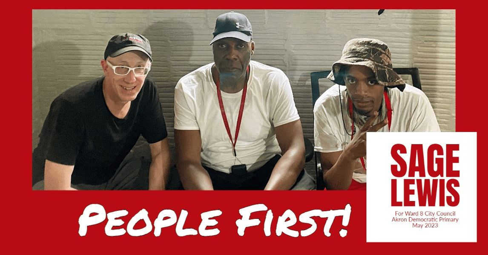

Timeline photos
"WILL YOU PLAY WELL WITH OTHERS?"
I was out talking to voters yesterday and a woman asked me this question: “Will you play well with others?”
That’s a really good question. It represents a deep understanding of who I am. I really appreciated the question. She is wondering if I will be able to work with other members of city council if I get elected.
So let me talk a little about that.
My first response to her was: “I don’t know. I’ve never been in a situation like this before.”
My second response was that I understand very clearly that in order to get things done in a group of lawmakers you must compromise. There is a part of me that doesn’t like that word “compromise.” It represents giving in. Accepting a bad situation.
The 20 year old idealist, Sage, is alive and well in me. I am filled with that fire and rage and energy. But I’m not 20 years old. I’m 51 years old. And that brings a certain amount of cold, hard experience with it. The truth is if you want to get things done, you compromise.
As a person who has been sued and has sued other groups, I have learned what a good legal deal is when you finally settle. Both sides should not be happy. That’s how you know you have met a fair deal. You wanted more, but so did they. But you both got something.
That’s compromise. That’s community.
I get so angry at my Communist friends. Most of them don’t vote. It just doesn’t make any sense to me. Why bother being involved in the system if you aren’t willing to do the thing that makes real change? The answer is simple: They don’t want to compromise. Even voting for someone like me is not good enough. They talk about burning the system to the ground. But I don’t see them making any headway with that either. I was talking to a friend of mine who is my age. She said all the communists are is “talk.” They just talk and get nothing done. That’s how I feel sometimes too. But I do deeply admire their uncompromising idealism. It’s just young and naive. It’s sweet in its own way.
Look: If you voted for Hitler (which is something I would definitely not put past Americans) and he was in city council with me, I’d look for ways to work with him. He was really into dogs and animals, from what I understand. Maybe we could do a deal on helping stray dogs.
The Akron equivalent to Hitler is Jeff Fusco. Why the hell you vote for him is beyond me. All he does is carry the water for the administration. I mean, do you just want a king? Because that’s what Jeff Fusco and his new cronie, Ginger Baylar, are doing to us. They are minions for the administration. Either you don’t understand that or you don’t care. Because you just keep voting for this guy.
But I’ve been thinking a lot about how I could work with Jeff Fusco.
In 2004, during his deputy service director stint, he was caught and convicted driving drunk in a city-owned car. That's an appointed 6 figure post. It's in the cabinet of the mayor. He was "punished" with a seven-week suspension from the city without pay.
I’m a recovering alcoholic. I quit drinking in 2003. Clearly, Fusco is an alcoholic too. I’d love to work on a deal with him to help other alcoholics like us. That would be really cool. And I’d definitely be looking for other ways to work with him too.
This is how you get things done. You look for things you have in common. Not what your differences are.
If you have listened to me over time you have seen that I regularly talk about understanding people like:
Addicts
Homeless people
Pedophiles
Conservatives
Black people
White people
Mentally ill people
School shooters
I am always looking to try to understand people I don’t understand. I fundamentally believe this is how we grow as a society. Hating other people and accusing them of just being evil or stupid is a cop out. It’s not true. Everyone, and I mean everyone, has gotten to the place they are in life for reasons that make sense. You just have to be open to listening to them and understanding their perspective.
Now, I am NOT saying we must let child molesters have free reign on our kids. I actually believe we probably should be doing better at keeping these active attackers away from our kids, probably permanently. (Did you see what the Dalai Lama has been up to, by the way.)
I am so furious at a group of homeless people right now. Some of them are acting like complete and total idiots. But I know why. It’s the change of seasons. Every change of season makes this outdoor community go batshit crazy. They’ll calm down. We just have to get over this period.
We must understand. We must listen. We must make room for everyone in society.
If all we ever do is hate people who aren’t like us, we will never fix our problems. We’ll just be outraged every time an old man wants a child to suck his tongue, everytime a young white man slaughters school children and nothing will ever get done.
We need to allow men to have a place they can go if they are having feelings and thoughts of pedophilia. We need to have places for men to go who are thinking about shooting up a school. We have to stop these things before they happen. (Have you noticed how a large portion of our problems in society are caused by men? We have a "man" problem. We need to help our men deal with their emotions and urges. Men have a very important place in society. We deserve to be here. But we need emotional help. A LOT OF EMOTIONAL HELP.) And the only way to do that is through understanding and compassion. It’s the only way.
So, will I work with other people? I can’t wait to work with other people. Finding common ground with people who are different than me is one of the most fun things I do on this planet.
And then there are the people I am so excited about working with. You need to vote for these people on May 2, 2023:
Tara Mosely - Mayor
Eric Garrett - Council at Large
Fran Wilson - Council at Large
Linda Omobien - Council at Large
Damarios S. Walker - Ward 3
Russ Neal - Ward 4
Sage Lewis - Ward 8
Susan Culver - Ward 9
If you want to meaningfully work on crime, addiction, poverty and all the other cancers that are eating away at the foundation of Akron: YOU NEED TO VOTE FOR THOSE PEOPLE.
I want to work with them so bad I’m a little nervous I’ll not pay as much attention to people that are different than me.
Look: I don’t need to be doing this. I don’t need the money. And quite honestly, it is a kind of stressful process running for office. It’s much more fun “being the hands and feet of Jesus,” literally something people tell me I am with the work I do with the homeless community. But I feel very strongly that Akron needs to be paying attention to the low income community much more than we need to be renovating Lock 3. Lock 3 is just polishing a turd. I’m telling you: I am deeply involved in the low income community of Akron and it is undermining everything. If we don’t address the fundamental issues of poverty (which are hopelessness and isolation) it will destroy our city. That’s why I’m running.
Please vote for me, Sage Lewis, as the Ward 8 City Council leader on May 2, 2023.
#sageforakron8